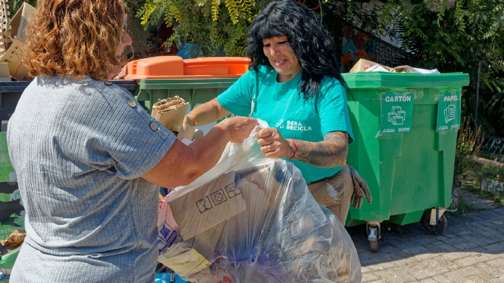
Zona Centro
Lunes, miércoles y viernes · 8 a 12 hs
Recorrido: Av. 14, entre calles 126 y 148.
Somos una comunidad autogestionada de recicladores formales e informales. Recuperamos residuos, cuidamos el ambiente y sostenemos un trabajo digno para muchas familias de la zona.

Zona Centro
Recorrido: Av. 14, entre calles 126 y 148.
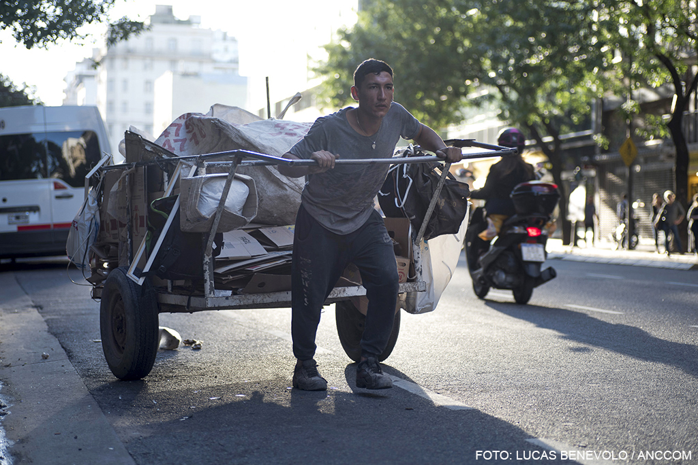
Zona Ranelagh
Recorrido: circuito costero y calles aledañas a la estación.
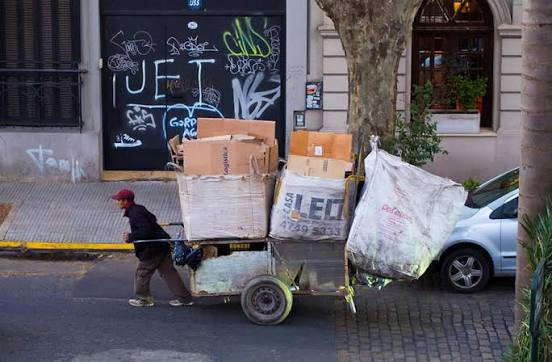
Zona Hudson
Recorrido: parque industrial y accesos a la autopista.
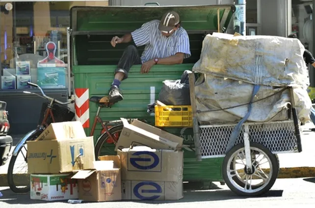
Zona Belgrano
Recorrido: Barrio Jacarandá,Autopista y complejos deportivos.
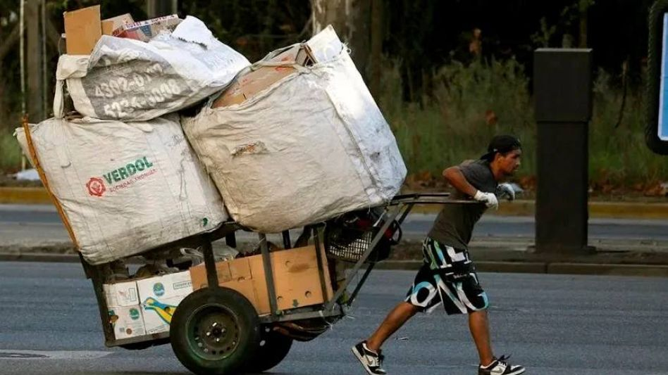
Zona Plátanos
Recorrido: Av.Néstor Kirchner,Barrios y Parque Industrial.
Días y horarios orientativos: pueden variar por zona. Confirmá el recorrido de tu barrio por los canales de contacto.
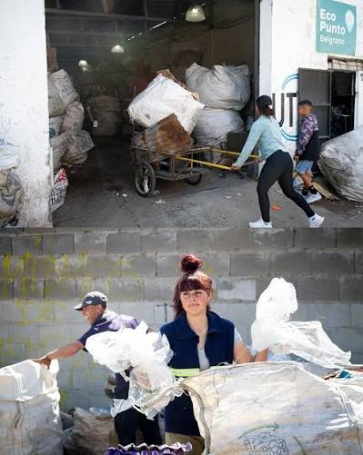
Pasamos por recorridos fijos para retirar el material seco que separás en tu casa.
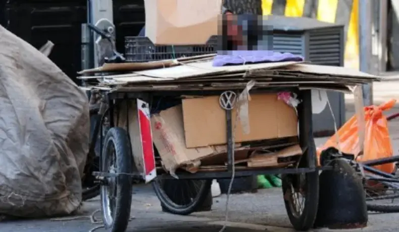
Recicladores independientes que recorren la zona a pie o con carro propio.
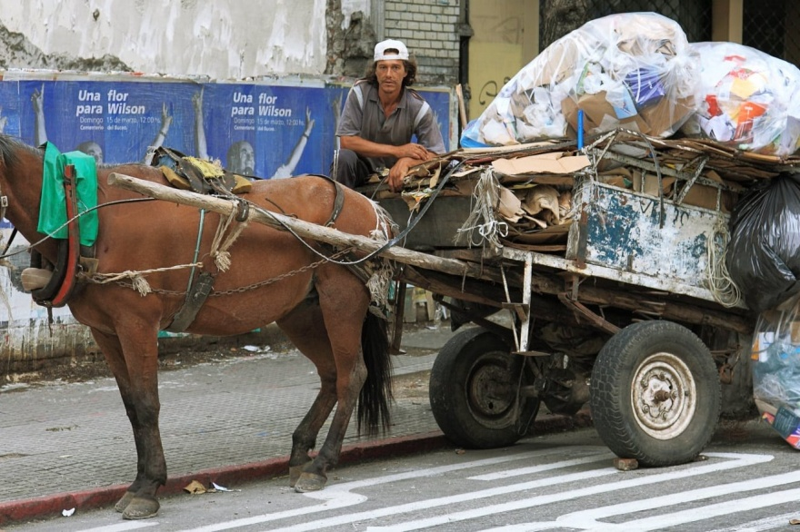
Cuidamos el medio ambiente y estamos en contra de la tracción a sangre
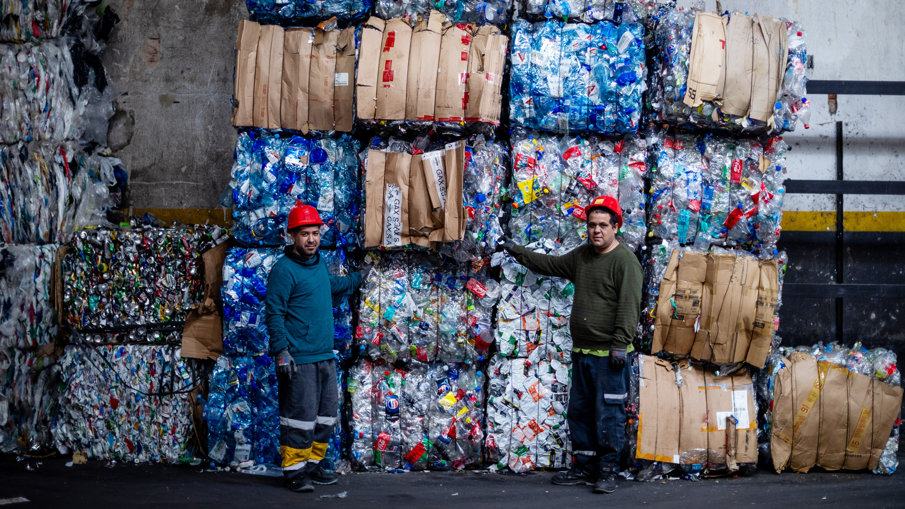
Ofrecemos material ya clasificado y prensado a compradores y empresas de reciclaje.
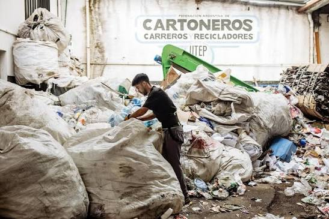
Acá clasificamos, prensamos y almacenamos lo que recuperamos en la calle. Si sos comprador o empresa de reciclaje, podés coordinar una visita y comprar directo, sin intermediarios.
Leer más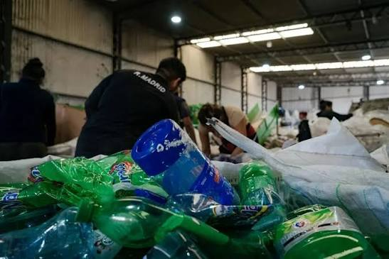

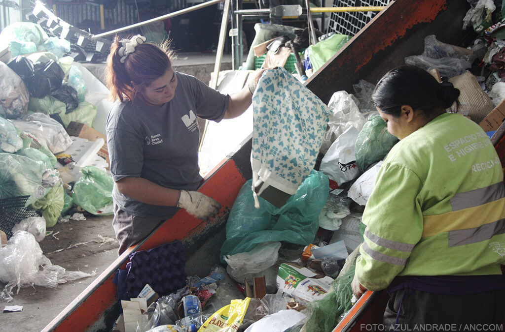
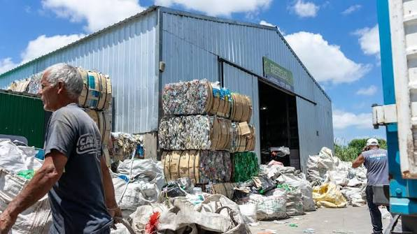